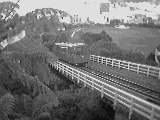

Day 09 — Monday 8 Jan
We had quite a slow start to the day, as we started calling various companies to reserve spaces on activities, at hotels and also at Orbit — the revolving restaurant at the top of the skytower — for the 18th when we'll treat Cayne.
We packed our stuff up, leaving one small bag at Cayne's place, and headed to the supermarket to get some nibbly food. We also picked up some muffins (the American cake type rather than the English bread type) for breakfast. These were a lot lighter than those I've had before and made a good breakfast.
We left Auckland and headed off on Highway 1 seeing some deer along the way. We took the 1B to bypass Hamilton but took a wrong turning somewhere along the way and ended up driving through it instead. We continued along Highway 1 going through a town with the oddest tourist information centre I've ever seen — in the shape of a dog's head and a sheep's head. Unfortunately we didn't get a chance to take a photo of it. Eventually we arrived in Taupo. We drove through the town and along the lake edge looking at motels. The "Caboose" on Lake Terrace caught our eye. It is "a taste of africa" and has African pictures, decor etc. It's a nice place with an outdoor pool and spa. We chose a "compartment" (all rooms are named as train related rooms) which is smallish but very pleasant.
After having checked in and got changed we headed off to the "Craters of the moon", a Department of Conservation run thermal area which sprung up in the 1950s when the power station lowered underground water levels, reducing the pressure of the heated water, and causing more vigorous boiling and steam. The steam comes out of various holes in the area, and there are some craters too.
After this we headed off to the "Huka Jets" which we'd booked earlier. It's a 25 minute trip in a jet boat, which can operate in very shallow water and travels down to the Aratiatia Dam and up to the Huka falls. The Aratiatia Rapids were a spectacular part of the Waikato river until a power house and dam was built shutting off the rapids. They now open the gates 4 times a day to give a display of what they used to look like — we didn't get a chance to see them. The jet boat hoons along and can turn 360 degrees in it's own length. We got very wet and it was great fun. After the trip we bought a copy of the photo they'd taken before getting back into the car.
We headed firstly to the lookout for the Huka falls, known as Hukanui in Maori which means "Great Body of Spray", this is above and looks down on them and gives a lot of perspective. Next we went to a lower point and walked around the falls. They are really powerful and fall in a real milky/pale blue colour at the bottom. The amount of water which falls is regulated by a gate near Taupo. On this day it was at about 85% of capacity but sometimes it is as low as 15% and at this height it can be negotiated by canoe.
We headed off back to the hotel to get changed, and dried before heading off into Taupo for dinner. We walked past an aeroplane in McDonalds car park which formed part of the childrens playground! We ate at "Million Dollar View" which has a view over the lake. We both shared a scallop starter and had fish as our main course. All washed down with a really smooth bottle of red. We saw the sun set but unfortunately it started to rain and so it wasn't exactly a million dollar view.
It was still raining when it was time to walk back to the hotel and so we both got soaked!
Bubbling mud at the Craters of the Moon
Day 10 — Tuesday 9 Jan
We went to the "Serengeti restaurant" at the hotel for a continental breakfast and we both ate lots of fresh fruit.
We checked out of the hotel and drove alongside the lake, stopping at one of the scenic lookouts. It was a good job we did as we discovered that when I'd changed the batteries in my visor, I'd forgotten to put the battery cover back on. We did an about turn and went back to the hotel. The cover was still on the bed, so I picked it up and we set off again.
We were still on Highway 1 which follows the lake around offering lovely views. We stopped at another viewpoint. This one had a few people around already, including a couple who were about to launch their canoes (or were they kayaks?)
We set off again, and continued to drive along Highway 1, past the lake, through a couple of towns and then through Tongariro national park. This park consists of 3 active volcanoes — Ruapehu, Tongariro and Ngauruhoe. Ruapehu is the highest and most active, it last erupted in September 1995 spraying volcanic rock and emitting massive clouds of ash. Tongariro's red crater last erupted in 1926. Ngauruhoe is younger than the others and was the only one we could see clearly, the others being covered in cloud. There are loads of tramps that can be walked around the park, but time didn't allow for us to do any this time.
We headed along Highway 1 for a bit longer before stopping at Bulls in the Rangitikei region for lunch at the New Zealand/Dutch windmill cafe.
Then we headed off again, still on highway 1. The last part of the drive into Wellington is right next to the sea, and offers some beautiful views.
On arrival into Wellington we first went to the Interislander and Lynx ferry terminal to collect our tickets for tomorrow's crossing. This would save us time the following morning.
With the tickets safely tucked away, we drove into Wellington in search of a motel for the night. Wellington has a huge one way system which made our mission more difficult. Eventually, on our second trip around we found the "Marksman Motor Inn" and checked in.
After a quick cup of tea we headed off to the "Te Papa" museum — this is the national museum. We ony had an hour before it closed and so we concentrated on 2 areas, the awesome forces exhibition — all about earthquakes and volcanoes and quite a bit about the Taupo and Tongariro areas, and the Maori secton including a look at the Marae. A Marae is a set of buildings and open space designed to cater for and accomodate the community and it's visitors. There were loads more exhibitions to see but we were out of time (again!).
We headed for a walk along the waterfront and decided that we were hungry and so looked at the waterfront restaurants. We chose "Shed 5" which was lovely, we shared thai fish cakes to start and then I had snapper and Rich had lamb. The good exchange rate from GBP to NZD makes the quality restaurants affordable. This meal cost us NZ$100 — about £33 which we could easily have spent on one person in a similar place in London. Our waiter was full of helpful advice for the rest of our journey and made some suggestions of where to go and what to see.
After our pleasant meal we walked to the cable car station in Lambton Quay. We took this to Kelburn at the top and looked down over the city. In the "Highlights" section for the Wellington region of the Lonely Planet it says "Take the exhilarating cable-car ride". This wasn't exactly exhilarating, it's a very smooth, short ride up to the top — there are a couple of additional stops between Lambton and Kelburn.
We walked briefly into the botanical gardens and headed to the Carter Observatory. This has displays about stars and planets and also does shows in the planetarium. We had a talk about the New Zealand summer sky with the different constellations being highlighted, and then watched a film "Realm of the giants" about Saturn and Jupiter and their moons. We could have looked through the telescope which would have been great, but if we'd stayed we wouldn't have made the last cable car back down at 10pm.
After getting the cable car back down, we walked through the city back to the motel. We set all the alarm clocks we could find for our early start and went to sleep.

Wellington Cable Car
Move on to Wellington to Franz Josef or go back to the contents page
Comment on the Auckland to Wellington section